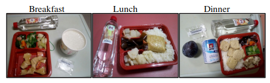

Being infected with Covid-19 in Taiwan
I am going to talk through what happened starting the day I found out my roommate’s friend contracted the virus.
I am on my way from Hsinchu to Taipei in our new apartment. We are moving to the capital city into a big shared flat. I am taking the bus with a huge and heavy suitcase full of different things. I am still working at the University of Hsinchu until mid-April but my partner is already living in Taipei. I am therefore doing round-trips from time to time to make the official moving day easier at the end of the month. I get in the bus, ready for an hour and a half trip. I look at the landscape as it scrolls by, and plan my evening. Once in Taipei, I will need another 30 minutes to finally reach the flat. My partner will then meet me after work. We don't have any plans yet. We will probably eat out and watch a movie at home.
Taipei main station, final stop, and I am getting ready to get off. The LED on my phone is flashing, I have a message on Signal. I read it quickly and freeze: a friend of our roommates, currently staying in the shared flat, has just been tested positive for the Covid-19 virus. The ambulance is on its way. I spent last weekend in the shared flat, which makes me a person at risk.
Lots of thoughts are going through my mind. With whom have I recently spent time? Will they catch the virus because of me? I am now potentially a danger to others, what do I do? I first get out of the bus, take my suitcase out, and isolate myself in a corner.
I call my partner. She is going to the nearest hospital. Good idea, I think, let’s do that. And here I am, dragging my suitcase to a hospital in Taipei, walking as far away from other people as possible. I am almost there when my girlfriend calls me back. She tells me they won't do nothing if we don’t have any symptoms and we should just wait at home. I stand there staring at the metro station. What are we gonna do? Take the bus back to Hsinchu? Take the subway to the shared flat? Ok, first, I will buy a mask and wash my hands. My partner tells me there is a special Covid-19 number in Taiwan: 1922, to reach the CDC (Centers for Disease Control and Prevention). I dial the number and wait. Once they find someone to communicate in English, I explain my situation. They are also not sure where to send us. Eventually, they help us make the decision to quarantine in Hsinchu. They advise me to buy enough food for 15 days before isolating, since I won't be able to leave my flat afterwards. I take the bus back to Hsinchu. Once at the apartment, I put a helmet on and jump on my scooter heading out for the nearest shopping mall. Loaded with two shopping bags full of food, I lock myself at home and wait for my partner. When she finally arrives, we stay away from each other to prevent the risk of infection.
The next day, the CDC calls us and asks for our Line ID (a Facebook type Android app) to make communication easier. The government makes us sign an agreement stating that, under penalty of a heavy fine, we must stay home for 14 days. Later that day, a police officer and two government officials arrive. Wrapped in plastic suits, they track our phones to make sure we won't leave the flat. They also give us another mobile phone with internet access to ensure we can communicate with the CDC. We sign the affidavit - getting out is very costly indeed. No need for further measures because in Taiwan, video surveillance cameras are everywhere. If we ever feel like going out without a phone, we will face justice eventually. They have also given us masks, thermometers, and food for a few days.
And here we go for two weeks at home. The filtered water and the mailbox are on the ground floor, which we don't have access to. Nevermind: we will boil water and pick up our mail later. In the wake of our relocation to Taipei, salt and spices are already in the shared flat kitchen. At first, the meals are bland, but we get used to it.

We sometimes get pizza delivered right to the door when we feel like it. We plan a quarantine schedule including time for sports (Zumba/fitness), time to read, time to work, movie and board game evenings, etc... We won't get bored.
Everything goes smoothly until Friday morning when my thermometer reads 37.5 degrees. You must add 0.5 to this type of thermometer, so it is definitely the beginning of a fever. I text the CDC. Later in the day, an ambulance picks us up and takes us to the hospital. They set up a chest X-ray and tap the back of our mouth with a cotton swab. The X-ray looks normal for both of us so they send us home. The throat swab results will be available within two days. It feels good to get out for a bit. The fever goes down the next morning.

Two days later, the CDC asks us for a list of everyone we have been in contact with for the last 20 days. They don't tell us why and we get a little worried. The next day, I get a phone call from an unknown number. This is the ambulance driver, he is waiting for me downstairs. In no time at all, I prepare a bag with some underpants, T-shirts, socks and books, and I go down wearing a mask after washing my hands. The ambulance takes me to the hospital and I am dropped off in a locked room. They tell me I am suspected of being positive and I am going to get a blood test. The next day, it is confirmed, I am case 216. I have slight pneumonia and a cough.
Pneumonia. Virus. Those words sounded like dangerous thunderbolts for a few seconds. The hardest part was sharing the news with my family. But very quickly, my optimism took over. My age, the rather mild symptoms I have and the fact that I was being taken care of in Taiwan are very reassuring.
There you go, I start my routine in this room which is gonna be mine for at least 20 days. I took two books, not enough clothes and my cell phone. They give me three Taiwanese meals a day (vegan, healthy and rather good).


I have to take my temperature and blood pressure morning and night. I have a TV with some programs in English and German. In short, I am not bad off. On the other hand, they don't give me soap and detergent. I ask the CDC if it is possible to arrange for a bag to be transferred from the apartment to the hospital room. They will take care of it later. It must be said that there is a crisis in Taiwan going on. Many positive cases are being detected. These are travelers returning to or arriving in Taiwan with no symptoms at all; whom the government has allowed to pass before the mandatory quarantine was put into place.
While waiting for my bag to arrive, I plan my days a bit like at home: yoga in the morning and then breakfast. I take antibiotics and let the nurse change my catheter if necessary. A sport session of 30 to 50 minutes. Shower. Reading until noon. Lunch. Napping. Reading until evening. Dinner and finally I watch TV and look at my mobile phone. I read while walking, it gives me another kind of boost in physical activity. For the first two days, I literally spent my days on the phone. Between the CDC, the university where I work, the police in each city and the hospital, I take turns repeating both my schedule for the last few days and the current state of my symptoms. The police tracked me down on the surveillance tapes. Now, they know what I have done and whom I have been in contact with.

After this steady flow of exchanges, the phone calls and text messages finally come to an end. The icing on the cake is that the CDC finally delivers the bag that my partner had prepared. I am now rich with clothes, soap, books, PC, detergent and a few photos.

Every day starts to look similar. Get up at around 7.30am. 10 minutes of Yoga. Temperature and blood pressure. The nurse comes in and injects me 60cc's of antibiotic. Breakfast delivered at around 8am. Hydroxychloroquine 200mg. One hour of reading or work. 30 minutes of exercise. Shower. Two hours of work or reading depending on the mood. Lunch. One hour nap. Five hours of work or reading. Dinner. Hydroxychloroquine 200mg. Temperature and blood pressure. And finally at the end of the day, I lie in the bed and draw, write, listen to a podcast or watch a movie.
I am on camera 24/7, but it is not stressful. I follow the planning I have set for myself as much as possible: I don't want to freak out in this artificial universe. This routine allows me to watch the days go by without getting bored. I will be tested on Mondays and Fridays until I get three negative results in a row. Then, the CDC will meet to decide whether I will be released, or not. These days, I am making a lot of progress with my projects, and I am doing almost more sports than I normally do. Of course, my motivation is fluctuating and after 18 days of quarantine, 12 of which were spent in isolation in the hospital, my desire for sunshine, fresh air, coffee, running, nature and social contact is becoming apparent. But overall, it’s okay, and I am looking forward to the day of my discharge. The other roommates and my partner are not infected, Taiwan seems to have the epidemic under control, I have health insurance so all expenses are covered. In short, for my part, so far, so good.


Latest news:
Thursday 2 April: Last chest X-ray was normal, so discontinuation of antibiotics (intravenous Azithromycin). I only keep taking the Hydroxychloroquine.
Sunday 5 April: First negative result after 13 days of treatment (17 days after first symptoms). Two more negative ones and I am out!
Wednesday 8 April: The last two test results were positive again so I must stay isolated until further notice. They start testing again each Monday and Friday.
Monday 13 April: Still positive. The nose test can be positive up to 80 days... The good news is that it doesn't mean that the virus is active anymore. In other words, I am healthy but potentially contagious thus I must stay locked down.
Wednesday 15 April : Nasal and sputum tests were negative today, soon going out?!
Friday 17 April : Positive nasal test (sputum test negative still). So I stay isolated and stop taking Hydroxochloroquine (it has been 20 days aready, not recommended to keep going). They start testing again each Monday and Friday. Hopefully, Taiwan nurses are super cool!
Friday 24 April : Negative again this morning, let’s see… Today is my 34th day isolated in the hospital room. I coded a video game based on pictures of my isolation room, if you feel like playing: try to Escape The Room!
Tuesday 28 April : 3 negative tests in a row! I go home tomorrow! Freedom!
More information on the Covid-19 in Taïwan :
2020 coronavirus pandemic in Taiwan Wikipédia